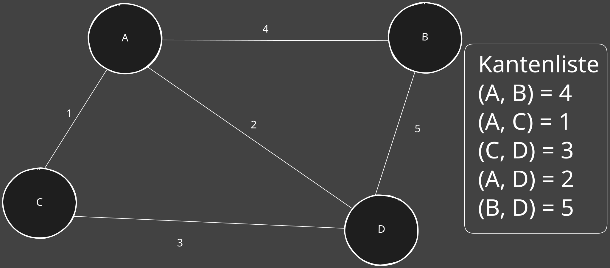
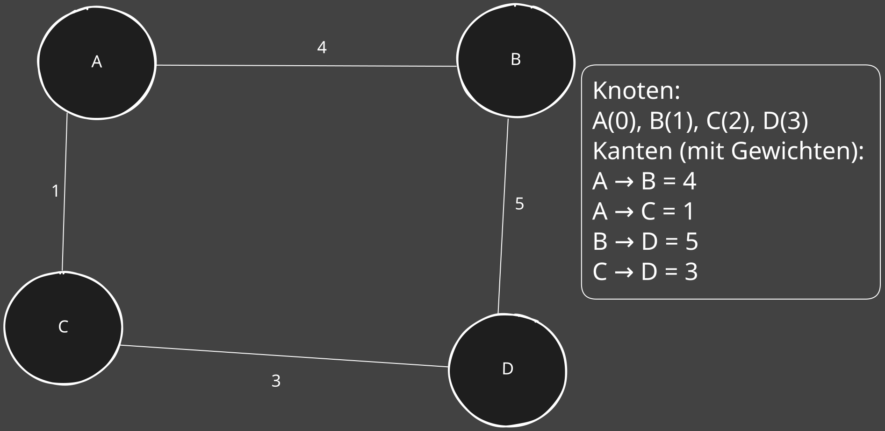

4. Kürzeste Weg
🚀 Dijkstra-Algorithmus - Kürzeste Weg¶
📚 1️⃣ Was ist der Dijkstra-Algorithmus?¶
Der Dijkstra-Algorithmus ist ein Algorithmus zur Berechnung des kürzesten Weges von einem Startknoten zu allen anderen Knoten in einem gewichteten Graphen (mit nicht-negativen Kantengewichten).
- Ziel: Finde den kürzesten Weg (minimales Gesamtkosten) von einem Startknoten zu allen anderen Knoten.
- Wichtig: Funktioniert nur bei nicht-negativen Kantengewichten.
🔑 2️⃣ Grundidee¶
-
Initialisierung:
- Setze die Distanz zum Startknoten = 0.
- Setze die Distanzen zu allen anderen Knoten = ∞ (unendlich).
-
Verarbeitung:
-
Wähle den Knoten mit der kleinsten bekannten Distanz (z.B. mit einer Prioritätswarteschlange/Heap).
- Aktualisiere die Distanzen zu den Nachbarn, wenn ein kürzerer Weg gefunden wird (Relaxation).
-
Wiederholen:
-
Markiere den aktuellen Knoten als "besucht" (fertig).
- Wiederhole den Prozess für den nächsten unbesuchten Knoten mit der kleinsten Distanz.
-
Ende:
-
Der Algorithmus stoppt, wenn alle Knoten besucht wurden.
DIJKSTRA(G, start):
DISTANZ[start] = 0
FÜR alle anderen Knoten v:
DISTANZ[v] = ∞
INITIALISIERE eine leere Prioritätswarteschlange Q
FÜGE start mit Distanz 0 in Q ein
WÄHREND Q nicht leer:
u = Knoten mit kleinster Distanz aus Q
MARKIERE u als besucht
FÜR jeden Nachbarn v von u:
WENN (DISTANZ[u] + KOSTEN(u, v)) < DISTANZ[v]:
DISTANZ[v] = DISTANZ[u] + KOSTEN(u, v)
AKTUALISIERE v in Q
#include <stdio.h>
#include <limits.h>
#define V 4 // Anzahl der Knoten
#define INF INT_MAX
// Funktion zur Suche des Knotens mit der kleinsten Distanz
int minDistance(int dist[], int visited[]) {
int min = INF, min_index;
for (int v = 0; v < V; v++) {
if (visited[v] == 0 && dist[v] <= min) {
min = dist[v], min_index = v;
}
}
return min_index;
}
void dijkstra(int graph[V][V], int start) {
int dist[V];
int visited[V];
for (int i = 0; i < V; i++) {
dist[i] = INF;
visited[i] = 0;
}
dist[start] = 0;
for (int count = 0; count < V - 1; count++) {
int u = minDistance(dist, visited);
visited[u] = 1;
for (int v = 0; v < V; v++) {
if (!visited[v] && graph[u][v] &&
dist[u] != INF &&
dist[u] + graph[u][v] < dist[v]) {
dist[v] = dist[u] + graph[u][v];
}
}
}
printf("Knoten \t Kürzeste Distanz vom Start (%d)\n", start);
for (int i = 0; i < V; i++) {
printf("%d \t\t %d\n", i, dist[i]);
}
}
int main() {
int graph[V][V] = {
{0, 4, 1, 2}, // A (0)
{4, 0, 0, 5}, // B (1)
{1, 0, 0, 3}, // C (2)
{2, 5, 3, 0} // D (3)
};
dijkstra(graph, 0); // Startknoten A (Index 0)
return 0;
}
🗺️ 3️⃣ Beispielgraph¶

✅ Schritt-für-Schritt (Start bei A)¶
🔹 Initialisierung:¶
| Knoten | A (Start) | B | C | D |
|---|---|---|---|---|
| Distanz | 0 | ∞ | ∞ | ∞ |
| Vorgänger | - | - | - | - |
🔹 Iteration 1: Start bei A¶
- Nachbarn von A:
- (A → B) = 4 → aktualisiere B: Distanz = 4
- (A → C) = 1 → aktualisiere C: Distanz = 1
- (A → D) = 2 → aktualisiere D: Distanz = 2
| Knoten | A | B | C | D |
|---|---|---|---|---|
| Distanz | 0 | 4 | 1 | 2 |
| Vorgänger | - | A | A | A |
- Markiere A als besucht.
🔹 Iteration 2: Wähle den Knoten mit der kleinsten Distanz → C¶
-
Nachbarn von C:
- (C → D) = 3
- Prüfen: Distanz über C zu D = 1 + 3 = 4 → NICHT kürzer als aktueller Wert (2). → Keine Änderung.
- Markiere C als besucht.
🔹 Iteration 3: Wähle den Knoten mit der kleinsten Distanz → D¶
-
Nachbarn von D:
- (D → B) = 5
- Prüfen: Distanz über D zu B = 2 + 5 = 7 → NICHT kürzer als aktueller Wert (4). → Keine Änderung.
- Markiere D als besucht.
🔹 Iteration 4: Wähle den letzten unbesuchten Knoten → B¶
-
Keine weiteren Updates notwendig.
-
Markiere B als besucht.
🏆 Endergebnis (kürzeste Distanzen von A):¶
| Knoten | A | B | C | D |
|---|---|---|---|---|
| Distanz | 0 | 4 | 1 | 2 |
| Vorgänger | - | A | A | A |
- Kürzeste Wege:
- A → B = 4 (direkt)
- A → C = 1 (direkt)
- A → D = 2 (direkt)
Fazit - Dijkstra¶
- ✅ Standard-Dijkstra: Findet den kürzesten Weg von einem Startknoten zu allen anderen.
- ✅ Optimierter Dijkstra: Für einen bestimmten Zielknoten kann der Algorithmus abgebrochen werden, sobald das Ziel erreicht ist.
- ✅ Vorgänger speichern: Ermöglicht es, den exakten Pfad zu rekonstruieren.
- ✅ Anwendungen: Navigation, Netzwerke, Routenplanung.
Floyd-Warshall-Algorithmus – All-Pairs Shortest Path (APSP)¶
📚 Was ist der Floyd-Warshall-Algorithmus?¶
Der Floyd-Warshall-Algorithmus ist ein dynamischer Programmieralgorithmus, der die kürzesten Wege zwischen allen Knotenpaaren in einem gewichteten, gerichteten Graphen findet.
- ✅ All-Pairs Shortest Path (APSP): Berechnet die kürzesten Distanzen für jedes Knotenpaar (u,v)(u, v)(u,v).
- ✅ Funktioniert mit positiven und negativen Kantengewichten, solange kein negativer Zyklus vorhanden ist.
- ✅ Ja, Zyklen sind erlaubt, wenn sie helfen, den kürzesten Weg zu finden.
- 🚩 Aber: Negative Zyklen (Zyklen, deren Gesamtkantengewicht < 0) sind problematisch, weil man dann unendlich oft im Kreis laufen könnte, um die Distanz weiter zu verringern.
- ❌ Nicht effizient für große, spärliche Graphen (besser geeignet für dichte Graphen).
🔑 2️⃣ Grundidee¶
-
Für jeden Knoten
kim Graphen prüfen wir:
"Ist der Weg voninachjkürzer, wenn ich überkgehe?" -
Formel (Transition): \(\(dist[i][j]=min(dist[i][j],dist[i][k]+dist[k][j])\)\)
-
Das bedeutet:
- Entweder: Wir behalten den aktuellen kürzesten Weg von
inachj. - Oder: Wir nehmen den Umweg über
k, wenn dieser kürzer ist.
- Entweder: Wir behalten den aktuellen kürzesten Weg von
🗺️ 3️⃣ Beispielgraph¶

✅ Initialisierung der Distanzmatrix¶
- Unendliche Distanz (INF = ∞) für nicht direkt verbundene Knoten.
- 0 für die Diagonale (Distanz von einem Knoten zu sich selbst).
🚀 4️⃣ Schritt-für-Schritt (Iteration über Knoten als Zwischenknoten)¶
Wir iterieren über jeden Knoten k als Zwischenknoten:
🔹 Iteration 1: Knoten A als Zwischenknoten (k = 0)¶
- Keine kürzeren Wege über A → Matrix bleibt gleich.
🔹 Iteration 2: Knoten B als Zwischenknoten (k = 1)¶
- Prüfen, ob ein Weg von A → D über B kürzer ist:
- A → B + B → D = 4 + 5 = 9
- Bisher: A → D = ∞
✅ Update: A → D = 9
Aktualisierte Matrix:
🔹 Iteration 3: Knoten C als Zwischenknoten (k = 2)¶
- Prüfen, ob der Weg von A → D über C kürzer ist:
- A → C + C → D = 1 + 3 = 4
- Bisher: A → D = 9
✅ Update: A → D = 4 (besser!)
Aktualisierte Matrix:
🔹 Iteration 4: Knoten D als Zwischenknoten (k = 3)¶
- Keine weiteren Verbesserungen, da D keine ausgehenden Kanten hat.
🏆 5️⃣ Endergebnis: Kürzeste Distanzen¶
- Kürzeste Wege:
- A → B = 4
- A → C = 1
- A → D = 4 (über C)
- B → D = 5
- C → D = 3
Beide finden den kürzesten Weg – aber für verschiedene Zwecke¶
| Kriterium | Dijkstra-Algorithmus | Floyd-Warshall-Algorithmus |
|---|---|---|
| Zweck | Kürzeste Wege von einem Startknoten zu allen anderen (Single-Source) | Kürzeste Wege zwischen allen Knotenpaaren (All-Pairs) |
| Kantengewichte | Nur nicht-negative Kantengewichte | Negative Kantengewichte erlaubt, aber keine negativen Zyklen |
| Zyklen | Vermeidet Zyklen, da er den kürzesten Weg direkt findet | Zyklen sind erlaubt, wenn sie den Weg verkürzen |
| Effizienz | Besser für spärliche Graphen | Besser für dichte Graphen |
| Laufzeit | O((V+E)logV)O((V + E) \log V)O((V+E)logV) (mit Heap) | O(V3)O(V^3)O(V3) |